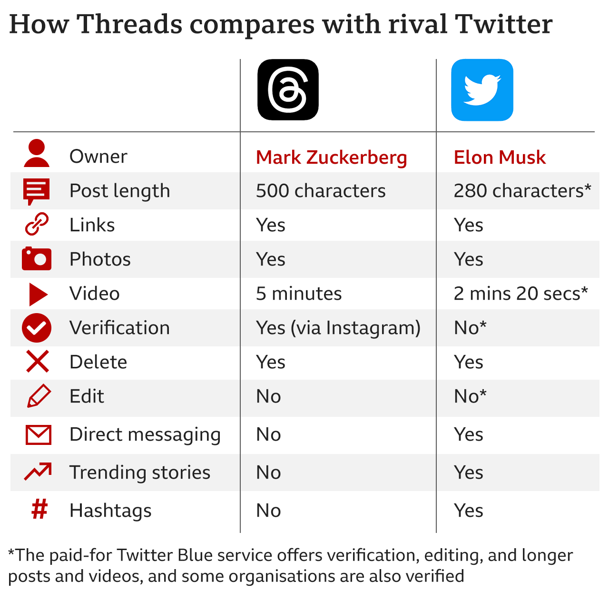

Search Result : {{notificationMessage}}
Technology
Last Updated on: {{currentDate}}
What is Threads? Meta’s Twitter clone that could spell real trouble for Elon Musk
Threads allows users to post up to 500 characters, and has many features similar to Twitter.Earlier, Mr Zuckerberg said keeping the platform "friendly... will ultimately be the key to its success". But Mr Musk responded: "It is infinitely preferable to be attacked by strangers on Twitter, than indulge in the false happiness of hide-the-pain Instagram." When asked on Threads whether the app will be "bigger than Twitter", Mr Zuckerberg said: "It'll take some time, but I think there should be a public conversations app with 1 billion+ people on it. "Twitter has had the opportunity to do this but hasn't nailed it. Hopefully we will." The launch has had a warm response online, with one person telling the BBC they saw Threads as a "much-needed competitor" to Twitter.
 Competitors have criticised the amount of data the app might use. This may include health, financial, and browsing data linked to users' identities, according to the Apple App Store. Some users have also expressed concern that it is not possible to delete your Threads profile without deleting the associated Instagram profile. Meta told the BBC: "At this time, you can't delete your Threads profile without deleting your Instagram account. This is something we're working on. In the meantime, you can deactivate your Threads profile at any time.
"Deactivating your Threads profile will not deactivate your Instagram account". Deactivation will mean your Threads profile, your posts and interactions with others' posts won't be visible, the firm added. Users can download and delete Threads data by visiting their Instagram settings, Meta says. Threads is now available to download in over 100 countries including the UK, but not yet in the EU because of regulatory concerns.
Tech company gives employees a recharge break, declares 9 days paid time off for all
More and more companies are realising the importance of short breaks for employees and the effect it can have on their overall productivity. Various studies on the internet talk about the benefits of taking a day off to recharge. And what could be better than your company asking you to take not one, but 9 full days off from work in order to recharge. A tech company did just that and is being praised of the internet for this move. Kudos to the management team for thinking of employees' comfort in times when major companies are conducting large-scale layoffs to cut down on costs.
7 July 2023 9:55 AM
NASA spacecraft completes 16th close approach to Sun, appears unharmed
NASA’s Parker Solar Probe completed its 16th orbit around the Sun, which included a close approach to the Sun on June 22, 2023, said the space agency. During the close approach, Parker came within 8.5 million kilometres of the Sun’s surface while moving at around 586,782 kilometres per hour. The spacecraft seemed to be operating normally without any issues after completing the close flyby. Parker is touted as humanity’s first ever mission that “visited” a star. The spacecraft is about the size of a small car and can travel directly through the Sun’s atmosphere. It was launched from Cape Canaveral in Florida on August 12, 2018. The spacecraft and its instruments are protected from the heat of the Sun by a 4.5-inch thick carbon composite shield that can withstand temperatures of around 1,777 degrees Celsius. Parker’s primary science goals including tracing how energy and heat move through the corona and to explore what causes the acceleration of solar winds and solar energetic particles.
7 July 2023 9:55 AM